Domina AgendaOps
El manual definitivo para gestionar, sincronizar y disfrutar de tus eventos corporativos, académicos y culturales de forma centralizada y en tiempo real.
Empezar a aprenderPrimeros Pasos
Antes de comenzar a crear o unirte a eventos, necesitas acceder a la plataforma. AgendaOps cuenta con un sistema de autenticación seguro.
Inicio de Sesión
Ingresa tu usuario y contraseña. Para tu seguridad, las contraseñas se ocultan automáticamente al escribirlas. Asegúrate de tener tus credenciales asignadas por el administrador del sistema.
Roles de Usuario
La plataforma identifica automáticamente tu perfil: Líder (Administrador de eventos) o Invitado (Participante). Tu interfaz se adaptará en consecuencia.
Rol: Líder (Administrador)
Como Líder, tienes el control total sobre la creación y gestión de los eventos en AgendaOps. Tu interfaz está diseñada para la productividad.
Creación de Eventos
Accede al panel de creación. Deberás proporcionar un nombre, una descripción detallada y asignar el evento a una categoría.
Validación de Fechas y Tiempos
El sistema protege la integridad de los datos. No podrás crear eventos con fechas u horas en el pasado. Selecciona cuidadosamente el horario de inicio y fin.
Gestión de Invitados
Añade participantes al evento. Puedes utilizar la lista de selección automatizada en lugar de la entrada manual de texto para evitar errores tipográficos.
Rol: Invitado
La interfaz de Invitado está pensada para la lectura y el seguimiento. Como invitado, tu principal tarea es mantenerte informado de tus compromisos.
Sincronización en Tiempo Real
Los eventos gestionados por el Líder se sincronizan automáticamente con tu pantalla mediante MongoDB. Verás las actualizaciones de fechas, cancelaciones o nuevos eventos de inmediato, sin necesidad de recargar.
Visualización Clara
Navega a través del DataGridView para ver todos los detalles: Nombre del evento, descripción, hora y su respectiva categoría. Las ventanas están optimizadas para aprovechar todo el tamaño de la pantalla.
Interfaz y Funcionalidades
Explora en detalle cada componente de la interfaz de AgendaOps y comprende sus validaciones en tiempo real.
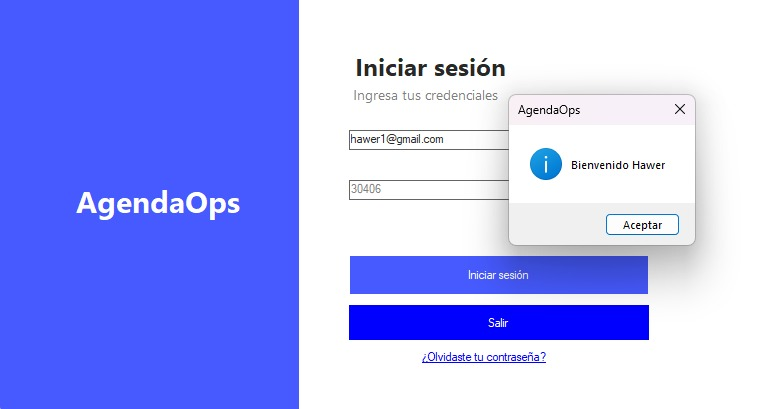
1. Acceso y Autenticación (Líder)
La pantalla de inicio de sesión es el primer filtro de seguridad de la aplicación.
- Validación de Credenciales: Verifica el correo y la contraseña contra la base de datos de usuarios.
- Mensajes de Bienvenida: Al autenticarse correctamente, el sistema emite un mensaje de validación confirmando tu identidad y rol antes de acceder al panel principal.
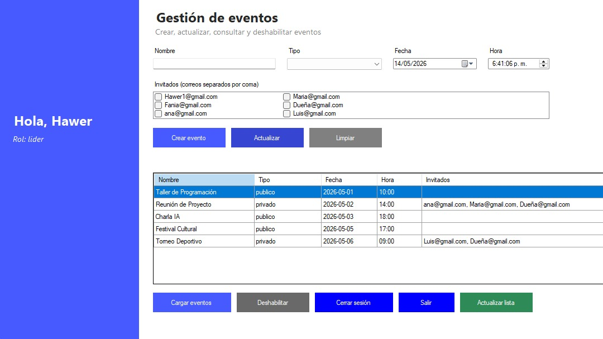
2. Panel de Gestión (Rol Líder)
La ventana principal centraliza la creación y lectura de eventos mediante componentes clave integrados con MongoDB.
- Formulario Dinámico: Permite ingresar nombre, seleccionar categoría ("Tipo"), fecha y hora.
- Validación de Fechas: El selector impide la programación de eventos en el pasado.
- Lista de Invitados: Checkboxes automatizados que reemplazan la escritura manual de correos.
- DataGridView: Muestra en tiempo real todos los eventos almacenados.
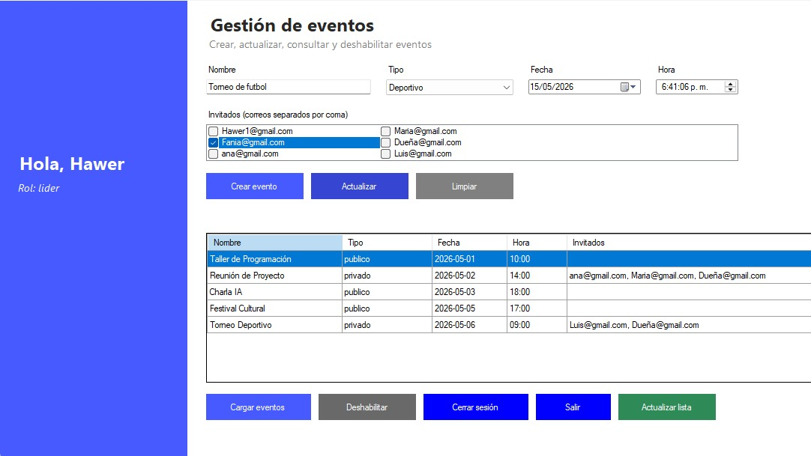
3. Edición de Eventos
La interfaz facilita la actualización de registros existentes de manera intuitiva.
- Autocompletado: Al seleccionar un evento en la tabla, el formulario se autocompleta con todos los datos correspondientes.
- Selección Automática de Invitados: Los checkboxes de los correos previamente invitados se marcan automáticamente para una edición rápida.

4. Confirmación y Feedback
La interacción está acompañada por notificaciones claras que indican el éxito de las operaciones.
- Alertas de Éxito: Al crear un evento, el sistema valida que los campos estén completos y muestra un mensaje de "Evento creado correctamente".
- Sincronización Reactiva: Tras la confirmación, la base de datos se actualiza inmediatamente en pantalla.
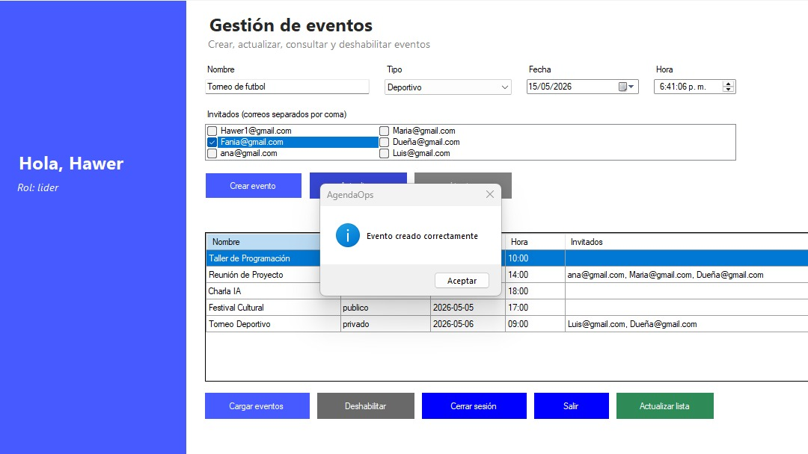
5. Deshabilitar Eventos
Control de estado y prevención de eliminaciones accidentales.
- Soft Delete: En lugar de eliminar registros, el sistema permite deshabilitarlos, manteniendo el historial.
- Confirmación de Seguridad: Se requiere validación extra mediante un cuadro de diálogo "¿Desea deshabilitar este evento?" para evitar acciones involuntarias.
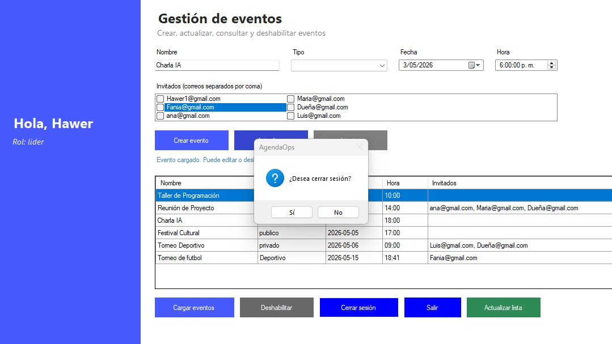
6. Cierre de Sesión Seguro
Protección del flujo de trabajo y cierre de procesos.
- Validación de Cierre: Al intentar cerrar sesión, el software pide confirmación para prevenir la pérdida del contexto actual.
- Retorno al Login: Una vez confirmado, se redirige de manera segura a la pantalla inicial.
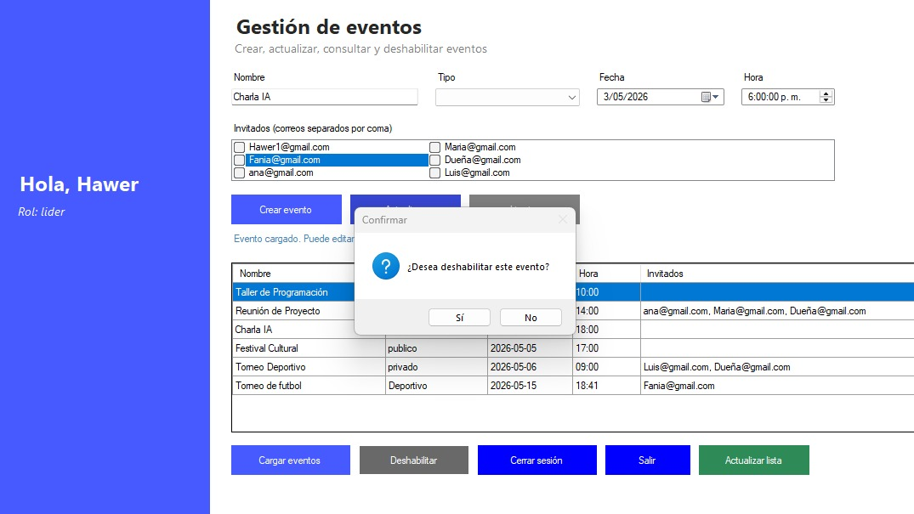
7. Salir de la Aplicación
Gestión del ciclo de vida del software.
- Control de Salida: El botón 'Salir' dispara una alerta de sistema "¿Desea salir de la aplicación?".
- Cierre Limpio: Garantiza que la conexión a MongoDB se cierre adecuadamente antes de terminar el proceso.
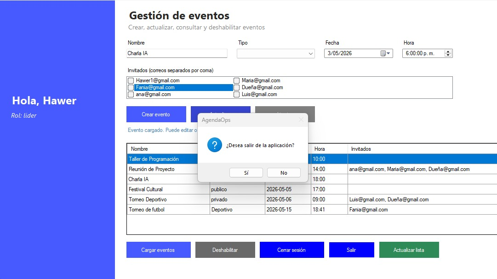
8. Acceso y Autenticación (Invitado)
El sistema adapta la experiencia según el rol del usuario logueado.
- Detección de Rol: Al iniciar sesión con credenciales de invitado, el sistema lo detecta y muestra la bienvenida personalizada ("Bienvenido Esthefania Buelva").
- Enrutamiento: El usuario es dirigido automáticamente a la vista de visualización.
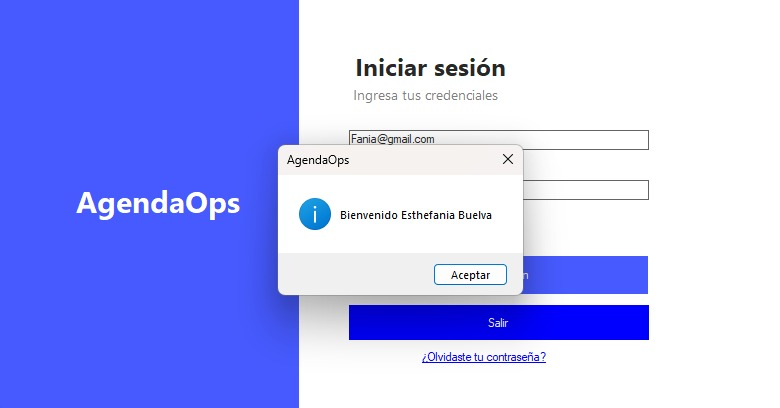
9. Panel de Invitado y Filtros
Interfaz optimizada para la exploración de eventos sin permisos de edición.
- Filtros Avanzados: Permite buscar eventos activos por Mes, Hora o Tipo.
- DataGridView Limpio: Muestra únicamente los datos relevantes para el asistente (Id, Nombre, Tipo, Fecha, Hora, Estado).
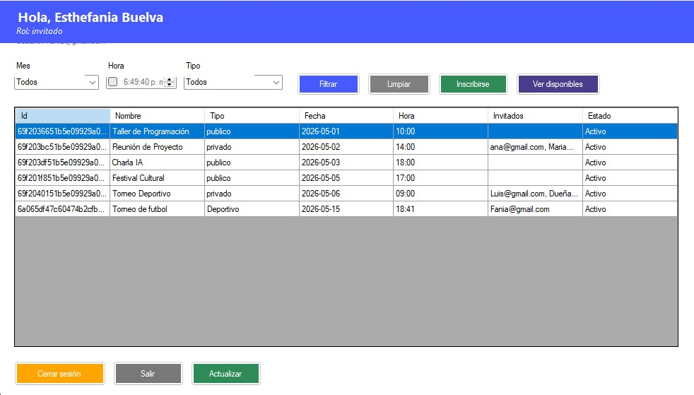
10. Inscripción a Eventos
Selección y participación en eventos programados.
- Selección Intuitiva: El invitado puede hacer clic en cualquier fila del DataGridView para marcar su interés en un evento (como el "Taller de Programación").
- Botón Inscribirse: Inicia el proceso de registro para el usuario en el evento seleccionado.
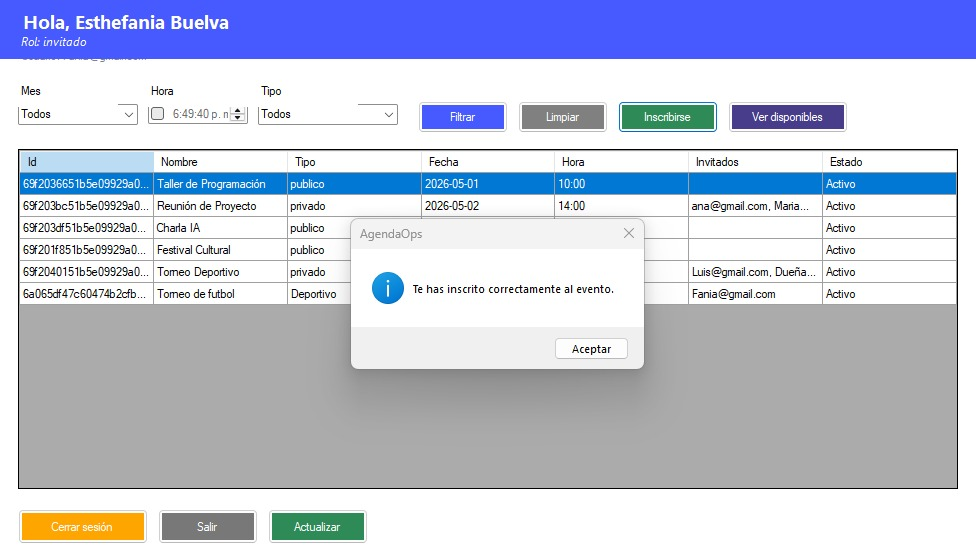
11. Feedback de Inscripción
Confirmación visual del registro en la base de datos.
- Validación Exitosa: Un cuadro de diálogo "Te has inscrito correctamente al evento" proporciona certeza al usuario.
- Actualización en MongoDB: Por detrás, el correo del invitado se añade a la lista del evento automáticamente.
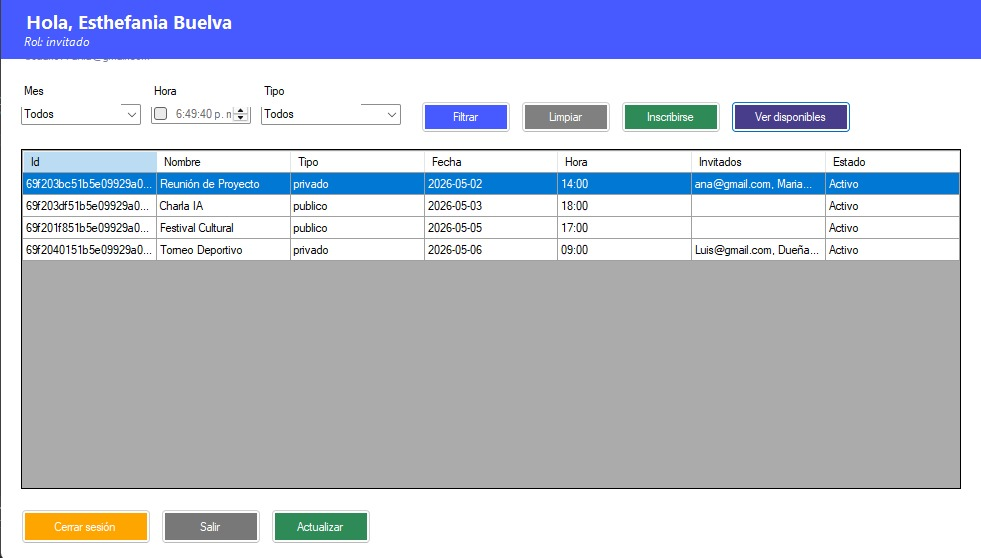
12. Ver Eventos Disponibles
Funcionalidad rápida para limpiar filtros y ver toda la oferta activa.
- Restablecimiento de Vistas: El botón 'Ver disponibles' recarga el DataGridView solo con los eventos en estado 'Activo'.
- Sincronización Transparente: Toda esta data proviene directamente de las colecciones de MongoDB en tiempo real, manteniendo al invitado siempre actualizado.
Preguntas Frecuentes
¿Qué hago si no veo un evento reciente?
Asegúrate de que el Líder haya guardado el evento exitosamente. Si eres Invitado, el sistema se sincroniza automáticamente con la base de datos (MongoDB). Si aún no lo ves, verifica tu conexión a internet o intenta reiniciar la aplicación.
¿Por qué la aplicación rechaza mi fecha de evento?
AgendaOps incluye una validación estricta de tiempo real. Si intentas crear un evento para el día de hoy, pero con una hora que ya pasó, el sistema te pedirá que corrijas la hora para evitar inconsistencias históricas.
¿Puedo crear nuevas categorías además de Académico, Cultura y Deportivo?
Actualmente, el sistema está estandarizado en estas tres categorías principales para mantener los reportes limpios. Para añadir nuevas categorías globales, ponte en contacto con el administrador del sistema IT.